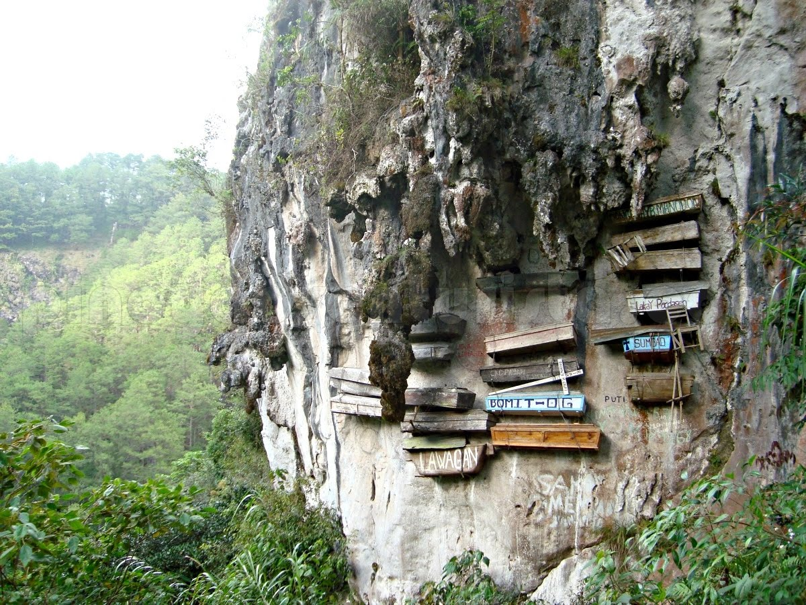
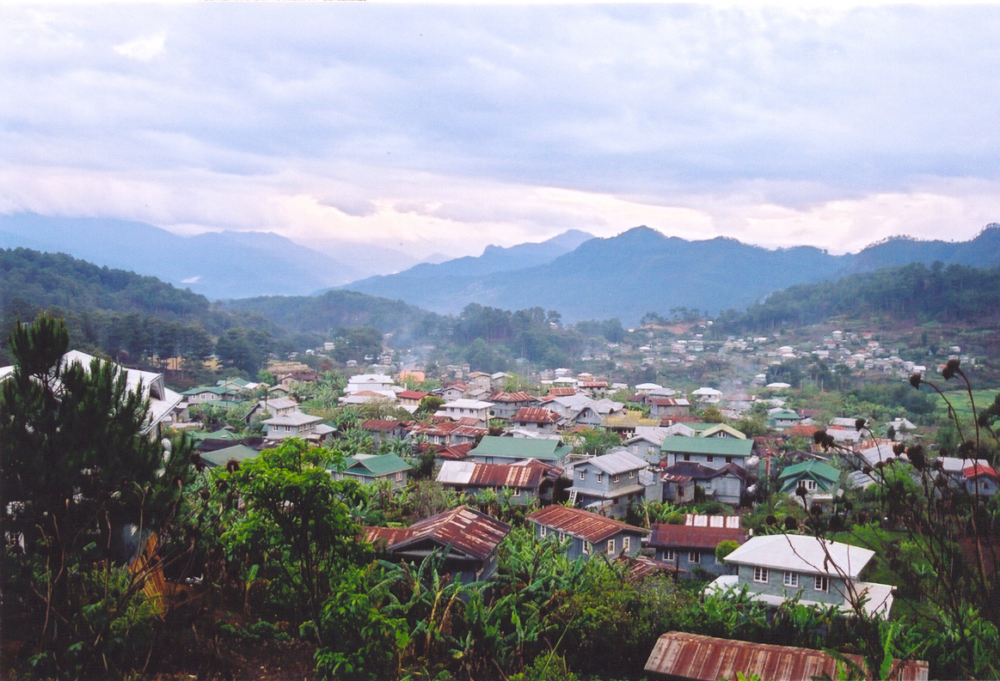

| Home | Boracay | Siargao | Puerto Princesa | Sagada | Banaue | Palawan |
|---|
|  | |
|  |
1. Who are allowed to go to Sagada?
Only fully vaccinated individuals or those who have received their last dose of COVID-19 vaccination at least two weeks before their arrival in Sagada will be allowed to enter for leisure purposes. They also must be able to present a negative RT-PCR test result taken within 48 hours from their arrival in the municipality or a negative antigen test taken within 24 hours before arrival. A pre-booking of at least one night at one of the DOT-accredited Sagada hotels or resorts and registration at the portal umali-kayo.sagada.gov.ph are also required. It is also important to note that only those using personal vehicles or vehicles exclusive to the travel group are allowed to visit Sagada as tourists.
2. What are the entry points in Sagada?
Domestic tourists can enter Sagada via the Dantay-Sagada Road.
3. What travel requirements do you need to prepare?
Here are the requirements that you need to prepare before going to Sagada:
Prepare your Vaccination Card or Certificate
To prove your fully vaccinated status, you must be able to present a vaccinated card or a vaccination certificate.
Secure a negative COVID-19 test result
A negative RT-PCR swab or saliva test must be obtained from accredited laboratories. The test must be taken not earlier than 48 hours before your arrival in Sagada. Tourists may also present a negative antigen test taken within 24 hours before arrival.
Register via the UMALI KAYO portal
All tourists must register via umali-kayo.sagada.gov.ph. This registration portal will only be open from 8 AM to 4 PM daily.
Pre-book at any of the DOT-accredited Sagada hotels or resorts
A minimum of one-night booking at any of the DOT-accredited and LGU-certified Sagada hotels or resorts is required. Bookings must be made at least two days before your trip to Sagada. For a list of accredited establishments, check out lodging.sagada.gov.ph.
4. What are the guidelines and protocols to follow when you're in Sagada?
Once you're in Sagada, make sure you follow these safety requirements:
Minimum health standards
All residents and domestic tourists must wear face masks, wash hands regularly and practice proper social distancing, especially in public establishments. This is to help reduce the risk of community transmission of COVID-19 disease.